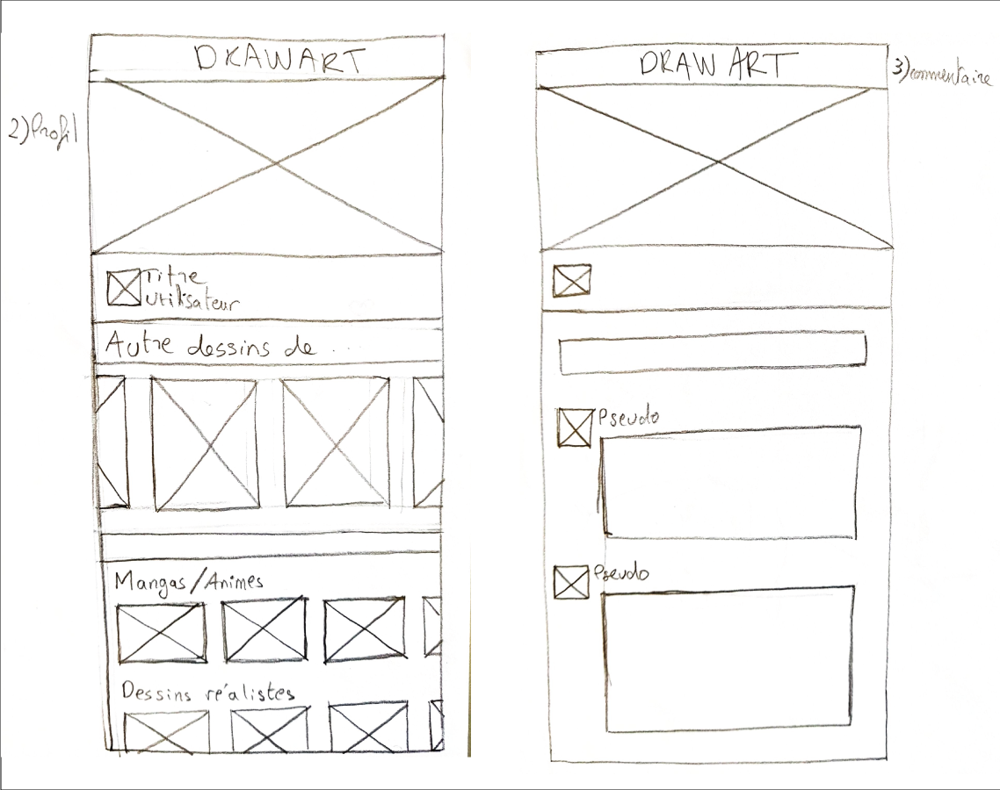
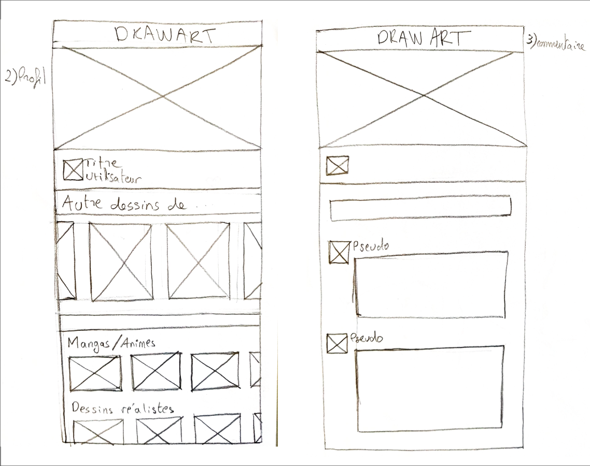

DrawArt

Présentation
Dans le cadre de cours de design UX/UI animés par Pierre Buttin (ancien Designer chez Google à Londres), nous devions imaginer un réseau social
sur un sujet qui nous importe. Nous nous sommes basé sur les méthodes agiles.
Il a fallu réfléchir à une problématique.
Pour mon application, j'ai eu l'idée de faire un réseau social qui
permet à des passionnés de la création, d'exposer et de partager leur oeuvres.
 

Maquettes wireframe
J'ai commencé par réaliser des maquettes sur papier. J'ai dessiné quatre maquettes principales de l'application:
- - La page d'accueil
- - La page du profil de l'utilisateur
- - Une page profil d'un utilisateur présentant tous ses dessins par catégories
- - Une page de commentaires
Maquettes
J'ai ensuite réalisé plusieurs maquettes hautes définitions avec le logiciel illustrator.
J'ai d'abord prototypé la maquette de la page d'accueil, elle contiendra les tendances de la semaine
et des derniers 24heures, la possibilité de choisir le genre de dessin.
Des suggestions de dessins sont proposés
en fonction des préférences de l'utilisateur.
La maquette de la page du profil utilisateur est la seconde maquette principale de mon application.
Elle contient un appel à l'action permettant de publier un dessin et qui est une des fonctionnalités
importante de l'application.
Egalement Une autre fonctionnalité qui permet de modifier le profil.
Ensuite, j'ai ajouté une section dans laquelle on retrouve tous les dessins de l'utilisateur rangés par catégories.
Userflow
J'ai par la suite réalisé un userflow avec l'outil invision qui permet de créer des prototypes interactifs. Lorsque l'on clique sur une zone, celle-ci ramène sur une entité. Pour le cas de l'image ci-contre, quand on clique sur l'image du header, elle ramène directement sur l'écran qui présente tous les dessins de l'utilisateur.
Sur la 2e maquette la direction vers l'entité est représentée par une flèche qui indique qu'en cliquant sur l'icone du profil situé dans le footer, celui-ci ramène directement sur l'écran de notre profil.
Conclusion
Ce projet m'a permis de mettre en oeuvre tout ce que j'ai appris depuis le début de la formation; en associant toutes les technologies que j'ai apprises. Cela m'a également appris à mieux organiser mon travail grâce aux méthode agiles.